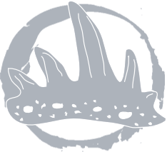

I have a keen interest in Open Science, and all my contributions are available to the scientific community and the public, either in their final version or in a non-commercial e-print version through my Researchgate page.